 The First Circle
Astronomical System
The above circle serves to form the first circle of astronomy, which contains two concentric circles identical to it, the outer circle stands for the zodiac and the inner circle stands for the seven planets. Through concordance and contrariety, the circular movement of this figure causes generation and corruption, ascent and descent and circulation in the four elements below, as will be shown in the second circle: here we show this in a straight line, to see the letters more clearly.
Frequencies in hz for the 31 temperament diatonic scale corresponding to the letters of the seven circulations, Brain Wave Generator presets can be made to correspond to given three hour periods in any week:
This table of frequencies together with the Figure of the Seven Circulations from the first circle of astronomy allows the operator to compose Brainwave Generator presets that correspond to different three hour periods in the week. The following information gives a quick overview of the second and third circles of astronomy, where the reckoning becomes much more complex, as 10 minute periods can be specified in the 24 hours of the day of the second circle and as the third circle introduces the zodiac and planets with their risings, culminations and settings. The next two figures are extracted from the previous one: the first, as shown, contains ten squares from which sixteen triangles are derived, shown in the second figure that follows.
These three figures contain all the principles necessary to form the two following Circles, and through their natural combinations all secrets of both upper and lower astronomy are revealed. The Second Circle  Note that the square in each hour is counted as two triangles, square aebf is counted as aeb ebf, giving six ten minute periods for each hour. The hours in the above figure are numbered 1 to 24 beginning with dawn. However, in the preceding table of frequencies, we have numbered the hours from 0 = midnight, in the current customary manner. The Third Circle  The third circle shows the twelve signs and seven planets, to be judged by the method given in the Book of the Seven Planets, namely the mutual overcoming of the elements. Finally, all judgments are reduced to this very simple figure of the four elements represented by a, b, c, d
____*____
Cyclus Harmonicus, or universal harmonic cycle |
||||||||||||||||||||||||||||||||||||||||||||||||||||||||||||||||||||||||||||||||||||||||||||||||||||||||||||||||||||||||||||||||||||||||||||||||||||||||||||||||||||||||||||||||||||||||||||||||||||||||||||||||||||||||||||||||||||||||||||||||||||||||||||||||||||||||||||||||||||||||||||||||||||||||||||||||||||||||||||||||||||||||||||||||||||||||||||||||||||||||||||||||||||||||||||||||||||||||||||||||||||||||||||||||||||||